AWS의 일부 서비스에 대한 사용 요금이 추가 될 수 있음을 미리 알려 드립니다.
소개 CodeBuild 란 운영 서버에 소스코드를 배포(Deploy)하기 전에 코드에 대한 여러 작업들을 순차적으로 정의하여 진행하는 방식입니다. 여러 작업들은 코드 정리, 정적 분석, 유닛 테스트 등으로 구성 될 수 있습니다.
여기서 여러 작업들을 순차적으로 진행하는 것은 굉장히 중요합니다. 예로 관리자가 Build 한다고 생각합시다. 과정의 작업이 2~3 정도면 실수 할 일이 거의 없지만, 작업이 10개 이상만 된다면 매번 순서를 체크해 가면서 빼먹지 않고 해야할 뿐더러 중간 과정이 1시간 정도 소요된다면, 하루를 Build 하는데에만 낭비할 것입니다. 컴퓨터가 아닌 이상 실수를 하지 않는 다고 보장 할 수 없습니다. 그렇기 때문에 순차적으로 진행하는 것은 중요한 것입니다.
AWS는 개발자들에게 사람을 대신하여 자동화의 길에 한 발자국 가까워 지도록 CodeBuild 를 제공합니다.
실습 이번 실습에서는 CodeBuild 와 S3 를 이용한 정적 사이트 배포를 진행하도록 하겠습니다.
1. S3 bucket 생성하기
S3 console 에 접속하여 [버킷 생성] 버튼을 클릭합니다. 저는 미리 생성한 버킷을 사용하겠습니다. 리전은 서울로 선택하고 [등록] 버튼을 클릭합니다.
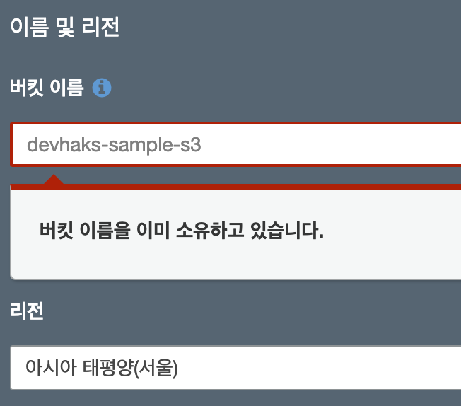
생성한 버킷의 [속성]탭 이동합니다. 정적사이트 기능을 하도록 아래와 같이 입력 후, 저장 합니다.
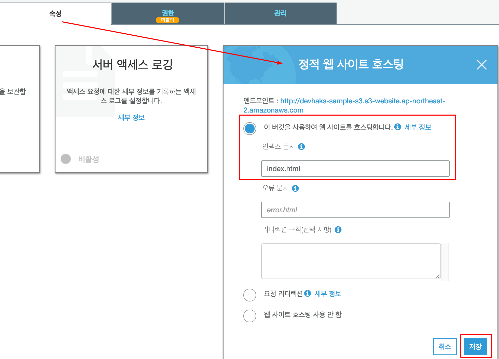
버킷의 접근에 대한 정책을 설정합니다. 정책을 설정하는 이유는 외부로 부터 사이트에 접속하여 볼 수 있도록 하기 위함 입니다. 여기서는 사용자들이 볼수만 있도록 Read 권한만 적용 하겠습니다.
2. CodeBuild 프로젝트 생성하기
CodeBuild console 에 접속하여 우측 상단에 있는 [Create build project] 버튼을 클릭합니다.
Project configuration
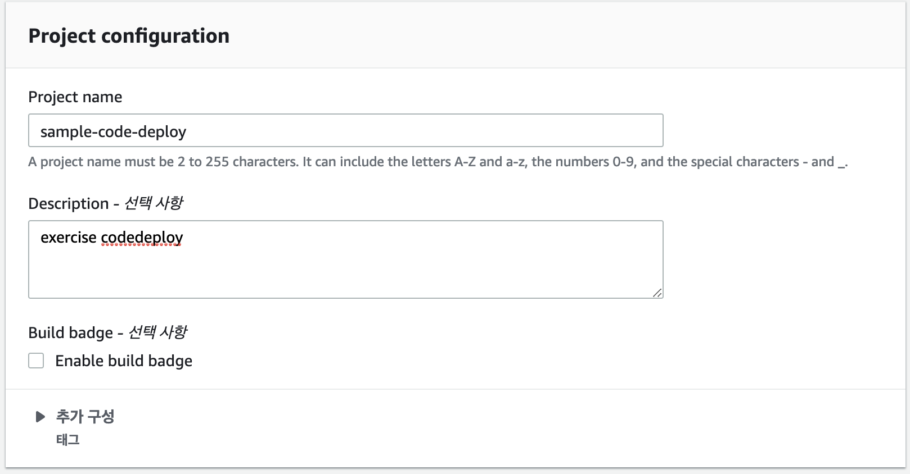
Source
Source provider: 소스코드를 어디서 받을지 선택합니다.
Repository: 자신의 계정에 있는 저장소를 사용할 것이므로 https://github.com/devhaks/aws 를 fork 합니다. 참고로 저장소에 올린 프로젝트는 vue.js 입니다.
GitHub repository: fork한 자신의 저장소를 선택합니다.
Build Status: 빌드에 대한 성공/실패 상태를 github 페이지에도 볼 수 있도록 설정합니다.
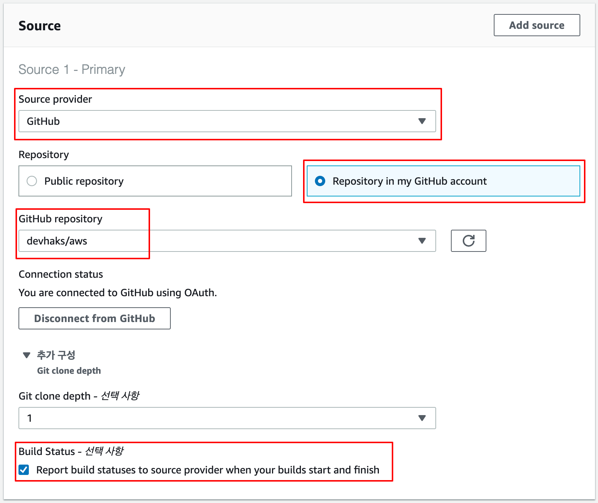
Primary source webhook events
Webhook: 저장소에 코드 변경이 있을 때마다, Build 를 할 것인지에 대한 선택사항 입니다.
Event type: 코드 변경이 어떠한 방식에 의해 변경됬는지 선택합니다. (push, pull request 등등)
Start a build under these conditions: Build 할 조건을 설정하는 부분입니다. 사용자, 브랜치, 파일의 변경에 따라 제한 할 수 있습니다.
conditions 에 대한 상세 내용은 섹션 제목 Primary source webhook events 옆의 [정보]를 클릭하세요
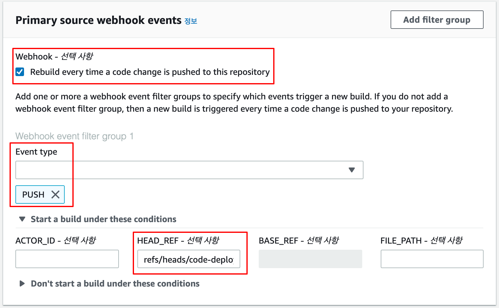
Environment
CodeBuild agent 가 어떠한 환경으로 프로비저닝 될 것인지 설정 부분입니다.
Environment image: 환경 구성에 사용할 이미지를 선택합니다.
Operating system: OS 를 선택합니다.
Runtime: 소스코드를 Build 하기 위해 필요한 환경을 선택합니다.
Runtime version: 버전을 선택합니다.
Image version: 버전을 항상 최신 or 선택한 버전을 사용할지 선택합니다.
Service role: CodeBuild agent 가 Build 를 수행하기 위해 권한을 가진 역할 을 선택하는 부분입니다. 자동 생성하도록 선택합니다.
Role name: Service role 을 이름을 입력합니다.
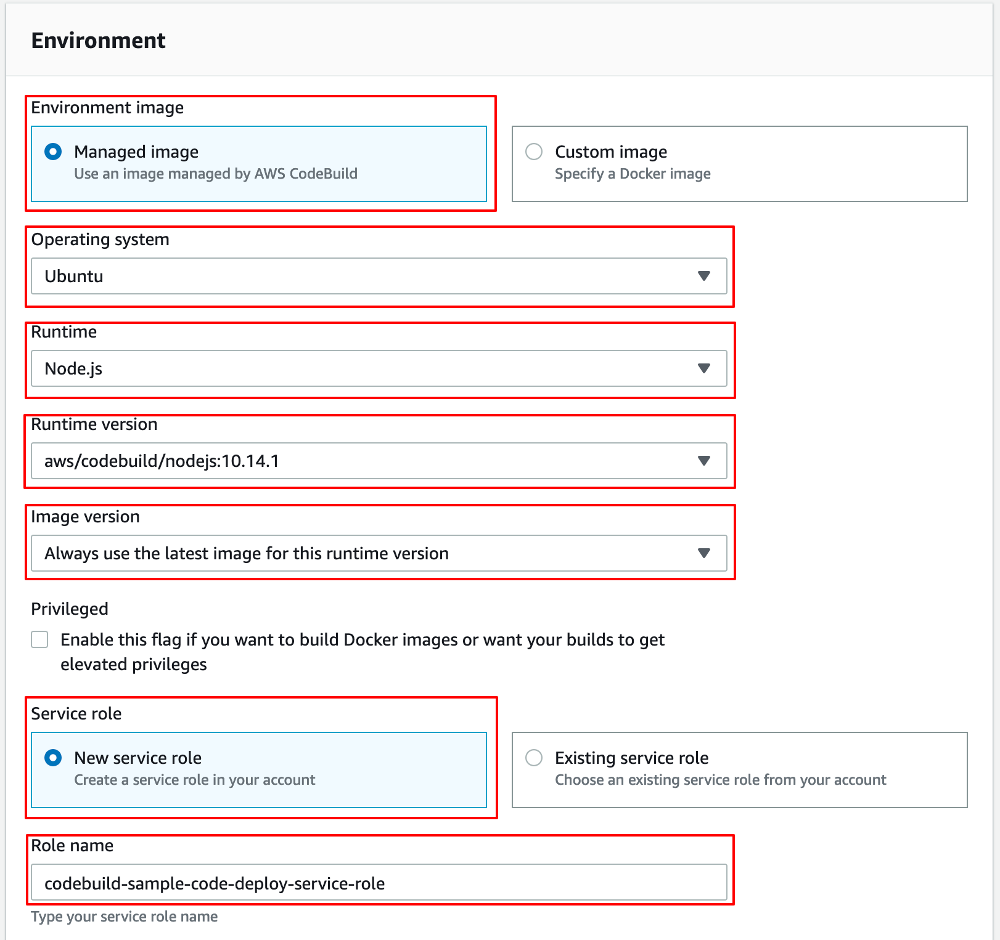
Buildspec
소개 부분에서 중요하다고 강조한 작업에 대한 순서를 정의하는 설정 부분입니다.
Build specifications: Build 정의서를 어디를 참고할지 선택 합니다. 이미 git 저장소에 포함되어 있습니다.
post_build: 에서 devhaks-sample-s3 대신 여러분이 생성한 버킷 이름을 입력합니다.
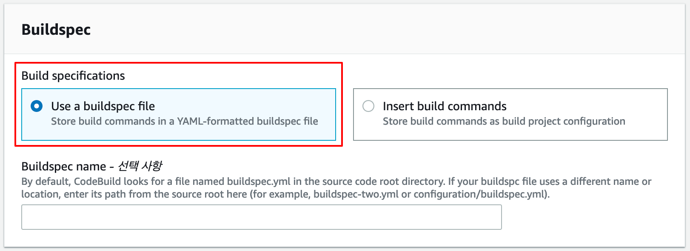
1 2 3 4 5 6 7 8 9 10 11 12 13 14 15 16 17 18 19 version: 0.2 phases: install: commands: - npm install pre_build: commands: - npm run lint build: commands: - npm run build post_build: commands: - ls -al - aws s3 cp --recursive dist/ s3://devhaks-sample-s3
Artifacts
build 결과물을 어디에 저장할지 설정 부분입니다.
여기서 Type 을 No artifacts 로 설정한 이유는 6번 과정 post_build 단계에서 dist 결과물을 S3 버킷의 바로 아래에 복사하기 위해서 입니다. artifacts type을 활성화 하면 버킷의 하위에 Build project name 이름으로 디렉토리가 생성되는데, 정적사이트에 접속했을 때 바로 index.html 이 보이기 위해서는 s3://devhaks-sample-s3/index.html 처럼 index.html 파일이 존재해야하기 때문입니다.
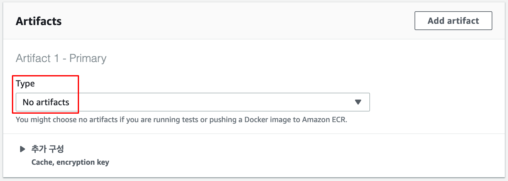
3. 역할에 정책 추가하기
역할 console 로 이동하여 sample-code-deploy 로 검색하고 검색 결과를 클릭합니다.
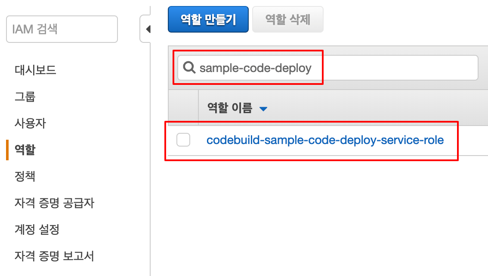
역할 상세 페이지로 이동한 후, [정책 연결] 버튼을 클릭합니다.
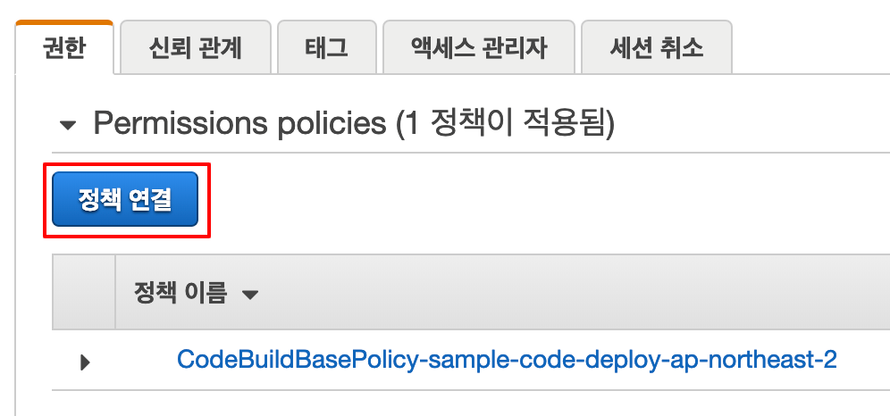
AmazonS3FullAccess 정책을 선택하고 우측 하단에 [정책 연결] 버튼을 클릭합니다.
4. Git 프로젝트 수정하기
5. Build 과정 확인하기 CodeBuild 콘솔 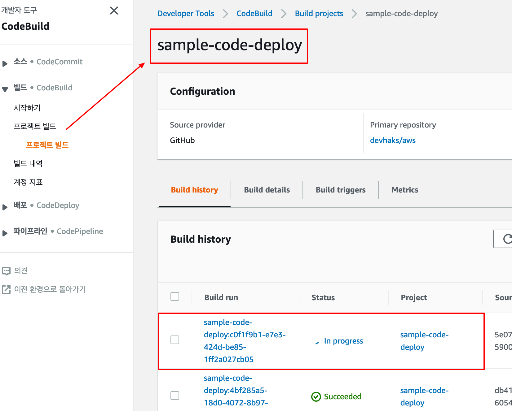
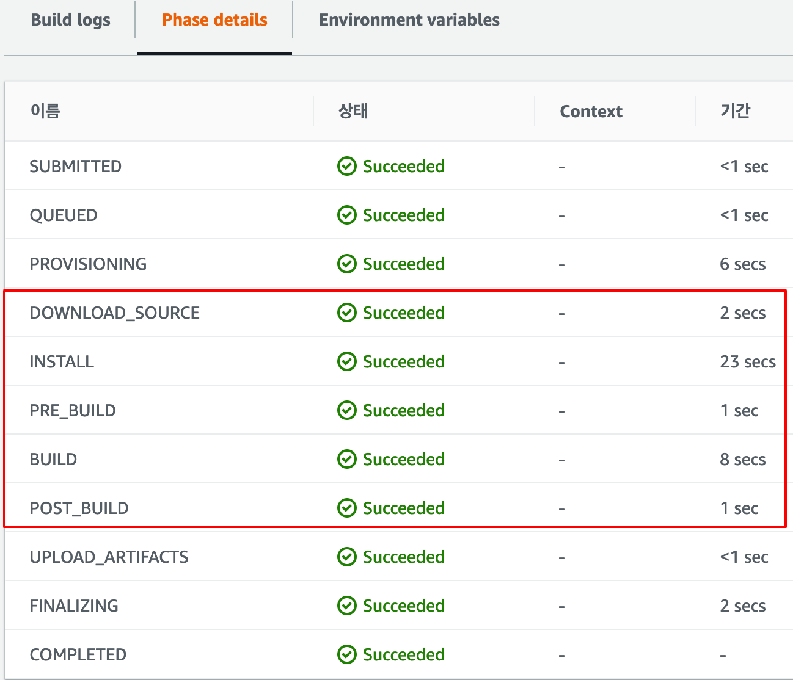
CodeBuild Log 이 로그는 CodeBuild agent 가 buildspec.yml 사양 파일에 따른 모든 작업을 진행한 내용입니다.
github 로 부터 소스코드를 다운로드 받습니다.
1 2 3 4 5 6 7 8 9 10 11 12 13 14 15 [Container] 2019/02/28 11:14:39 Waiting for agent ping [Container] 2019/02/28 11:14:43 Waiting for DOWNLOAD_SOURCE [Container] 2019/02/28 11:14:44 Phase is DOWNLOAD_SOURCE [Container] 2019/02/28 11:14:44 CODEBUILD_SRC_DIR=/codebuild/output/src544810733/src/github.com/devhaks/aws [Container] 2019/02/28 11:14:44 YAML location is /codebuild/output/src544810733/src/github.com/devhaks/aws/buildspec.yml [Container] 2019/02/28 11:14:44 Processing environment variables [Container] 2019/02/28 11:14:44 Moving to directory /codebuild/output/src544810733/src/github.com/devhaks/aws [Container] 2019/02/28 11:14:44 Registering with agent [Container] 2019/02/28 11:14:44 Phases found in YAML: 4 [Container] 2019/02/28 11:14:44 POST_BUILD: 2 commands [Container] 2019/02/28 11:14:44 INSTALL: 1 commands [Container] 2019/02/28 11:14:44 PRE_BUILD: 1 commands [Container] 2019/02/28 11:14:44 BUILD: 1 commands [Container] 2019/02/28 11:14:44 Phase complete: DOWNLOAD_SOURCE Success: true [Container] 2019/02/28 11:14:44 Phase context status code: Message:
INSTALL 단계
1 2 3 4 5 6 7 8 9 10 11 12 13 14 15 16 [Container] 2019/02/28 11:14:45 Entering phase INSTALL [Container] 2019/02/28 11:14:45 Running command npm install > yorkie@2.0.0 install /codebuild/output/src544810733/src/github.com/devhaks/aws/node_modules/yorkie > node bin/install.js CI detected, skipping Git hooks installation npm WARN optional SKIPPING OPTIONAL DEPENDENCY: fsevents@1.2.7 (node_modules/fsevents): npm WARN notsup SKIPPING OPTIONAL DEPENDENCY: Unsupported platform for fsevents@1.2.7: wanted {"os" :"darwin" ,"arch" :"any" } (current: {"os" :"linux" ,"arch" :"x64" }) added 1145 packages from 610 contributors and audited 23765 packages in 21.607s found 0 vulnerabilities [Container] 2019/02/28 11:15:08 Phase complete: INSTALL Success: true [Container] 2019/02/28 11:15:08 Phase context status code: Message:
PRE_BUILD 단계
1 2 3 4 5 6 7 8 9 10 [Container] 2019/02/28 11:15:08 Entering phase PRE_BUILD [Container] 2019/02/28 11:15:08 Running command npm run lint > test @0.1.0 lint /codebuild/output/src544810733/src/github.com/devhaks/aws > vue-cli-service lint DONE No lint errors found! [Container] 2019/02/28 11:15:09 Phase complete: PRE_BUILD Success: true [Container] 2019/02/28 11:15:09 Phase context status code: Message:
BUILD 단계
1 2 3 4 5 6 7 8 9 10 11 12 13 14 15 16 17 18 19 20 [Container] 2019/02/28 11:15:09 Entering phase BUILD [Container] 2019/02/28 11:15:09 Running command npm run build > test @0.1.0 build /codebuild/output/src544810733/src/github.com/devhaks/aws > vue-cli-service build - Building for production... DONE Compiled successfully in 6179ms11:15:17 AM File Size Gzipped dist/js/chunk-vendors.50e9f258.js 82.33 KiB 29.85 KiB dist/js/app.3fca0909.js 2.88 KiB 1.39 KiB dist/css/app.07d7b071.css 0.23 KiB 0.18 KiB Images and other types of assets omitted. DONE Build complete. The dist directory is ready to be deployed. INFO Check out deployment instructions at https://cli.vuejs.org/guide/deployment.html [Container] 2019/02/28 11:15:18 Phase complete: BUILD Success: true [Container] 2019/02/28 11:15:18 Phase context status code: Message:
POST_BUILD 단계
aws s3 cp --recursive dist/ s3://devhaks-sample-s3
을 실행합니다.
1 2 3 4 5 6 7 8 9 10 11 12 13 14 15 16 17 18 19 20 21 22 23 24 25 26 27 28 29 30 31 32 33 34 35 36 37 38 39 40 41 42 43 44 45 46 47 [Container] 2019/02/28 11:15:18 Entering phase POST_BUILD [Container] 2019/02/28 11:15:18 Running command ls -al total 456 drwxr-xr-x 7 root root 4096 Feb 28 11:15 . drwxr-xr-x 3 root root 4096 Feb 28 11:14 .. drwxr-xr-x 4 root root 4096 Feb 28 11:14 .git -rw-r--r-- 1 root root 1056 Feb 28 11:14 .gitignore -rw-r--r-- 1 root root 357 Feb 28 11:14 README.md -rw-r--r-- 1 root root 53 Feb 28 11:14 babel.config.js -rw-r--r-- 1 root root 566 Feb 28 11:14 buildspec.yml drwxr-xr-x 5 root root 4096 Feb 28 11:15 dist drwxr-xr-x 800 root root 32768 Feb 28 11:15 node_modules -rw-r--r-- 1 root root 381172 Feb 28 11:15 package-lock.json -rw-r--r-- 1 root root 894 Feb 28 11:14 package.json drwxr-xr-x 2 root root 4096 Feb 28 11:14 public drwxr-xr-x 4 root root 4096 Feb 28 11:14 src [Container] 2019/02/28 11:15:18 Running command aws s3 cp --recursive dist/ s3://devhaks-sample-s3 Completed 237 Bytes/523.4 KiB (2.4 KiB/s) with 8 file(s) remaining upload: dist/css/app.07d7b071.css to s3://devhaks-sample-s3/css/app.07d7b071.css Completed 237 Bytes/523.4 KiB (2.4 KiB/s) with 7 file(s) remaining Completed 3.1 KiB/523.4 KiB (24.9 KiB/s) with 7 file(s) remaining upload: dist/js/app.3fca0909.js to s3://devhaks-sample-s3/js/app.3fca0909.js Completed 3.1 KiB/523.4 KiB (24.9 KiB/s) with 6 file(s) remaining Completed 4.2 KiB/523.4 KiB (32.7 KiB/s) with 6 file(s) remaining upload: dist/favicon.ico to s3://devhaks-sample-s3/favicon.ico Completed 4.2 KiB/523.4 KiB (32.7 KiB/s) with 5 file(s) remaining Completed 10.9 KiB/523.4 KiB (82.6 KiB/s) with 5 file(s) remaining upload: dist/img/logo.82b9c7a5.png to s3://devhaks-sample-s3/img/logo.82b9c7a5.png Completed 10.9 KiB/523.4 KiB (82.6 KiB/s) with 4 file(s) remaining Completed 266.9 KiB/523.4 KiB (1.9 MiB/s) with 4 file(s) remaining Completed 267.6 KiB/523.4 KiB (1.8 MiB/s) with 4 file(s) remaining upload: dist/index.html to s3://devhaks-sample-s3/index.html Completed 267.6 KiB/523.4 KiB (1.8 MiB/s) with 3 file(s) remaining Completed 285.9 KiB/523.4 KiB (1.8 MiB/s) with 3 file(s) remaining upload: dist/js/app.3fca0909.js.map to s3://devhaks-sample-s3/js/app.3fca0909.js.map Completed 285.9 KiB/523.4 KiB (1.8 MiB/s) with 2 file(s) remaining Completed 368.3 KiB/523.4 KiB (2.1 MiB/s) with 2 file(s) remaining upload: dist/js/chunk-vendors.50e9f258.js to s3://devhaks-sample-s3/js/chunk-vendors.50e9f258.js Completed 368.3 KiB/523.4 KiB (2.1 MiB/s) with 1 file(s) remaining Completed 523.4 KiB/523.4 KiB (2.7 MiB/s) with 1 file(s) remaining upload: dist/js/chunk-vendors.50e9f258.js.map to s3://devhaks-sample-s3/js/chunk-vendors.50e9f258.js.map [Container] 2019/02/28 11:15:20 Phase complete: POST_BUILD Success: true [Container] 2019/02/28 11:15:20 Phase context status code: Message:
5. 정적 사이트 확인하기 S3 console 로 이동하여 버킷의 url 주소를 확인합니다.
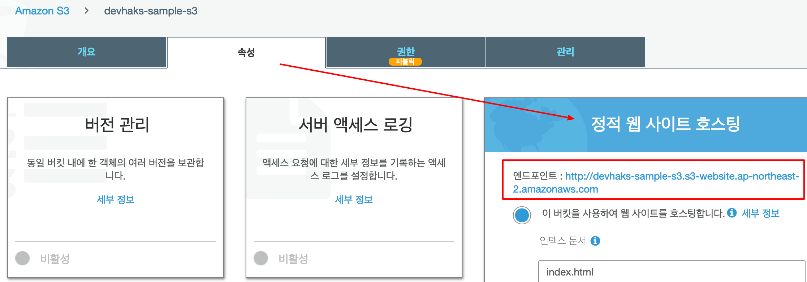
codeDeploy 가 성공되었으면 버킷에 파일들이 저장되어 있을 것이고 버킷 주소로 접속하면 다음과 같은 화면이 나올 것입니다.
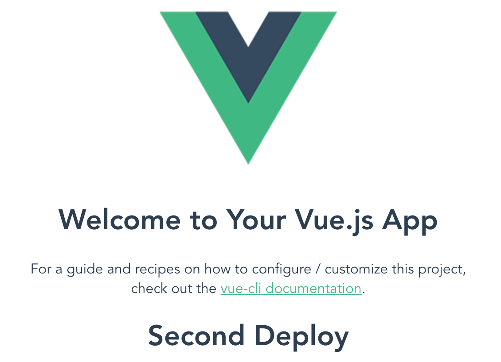
참고 사항 요금제 AWS CodeBuild 프리 티어에는 매월 100 빌드 분의 build.general1.small이 포함됩니다. CodeBuild 프리 티어는 12개월의 AWS 프리 티어 기간이 끝나도 자동으로 종료되지 않습니다.
상세 내용 - CodeBuild 요금 정책
사용 방법 영상